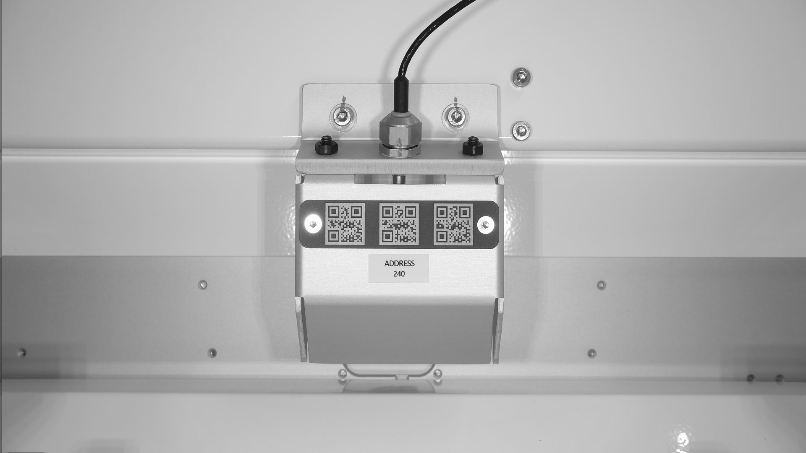

플레이트의 QR 3개와 뒤쪽 하단 문의 작은 홀 2개를 함께 보면, 로봇의 옆 이동 Y 와 회전 Θ 를 따로 읽을 수 있습니다. 어떤 배경 영역(ROI)을 쓸지는 1차 첫 번째 측정 사진만으로 골랐고, 2차 사진 57장은 마지막 시험에만 썼습니다.
로봇 팔 끝의 카메라가 플레이트를 찍습니다. 로봇이 옆으로 Y mm 가도, Θ 도 돌아도 사진 속 QR 은 똑같이 옆으로 밀려 보입니다. 사진에서 "밀린 양" 하나만 재면 두 경우를 구별할 수 없습니다.
맞혀야 하는 정밀도는 매우 작습니다.
| 허용 오차 | 실제 크기 | 사진 속 크기 |
|---|---|---|
| Y ±90 µm | 머리카락 굵기 정도 | 플레이트 약 1.3 px |
| Θ ±0.01° | 1 m 앞에서 0.17 mm 어긋나는 각도 | 플레이트 약 0.8 px |
화면은 3840×2160 화소, 카메라에서 플레이트까지 385 mm. 1 px(화소) 는 플레이트 위 약 0.07 mm.
달리는 기차 창밖을 보면 가까운 전봇대는 휙 지나가고 먼 산은 천천히 움직입니다. 몸이 옆으로 움직이면 가까운 것과 먼 것의 움직임이 다릅니다. 그런데 제자리에서 고개만 돌리면 가까운 것과 먼 것이 거의 같이 움직입니다.
카메라도 같습니다. 플레이트(385 mm, 가까움)와 그 뒤 하단 문(약 494 mm, 멂)의 움직임을 비교하면 Y 와 Θ 가 구별됩니다. 아래 표는 실제 사진에서 잰 값입니다.
| 사진 | 플레이트 QR 이동 | 하단 문 홀 이동 | 차이 |
|---|---|---|---|
| Y +1.00 mm (옆으로) | 13.8 px | 10.8 px | 3.0 px |
| Θ +0.18° (회전) | 13.6 px | 13.9 px | −0.3 px |
플레이트는 두 사진에서 거의 똑같이 약 13.7 px 움직였지만, 홀은 Y 이동에서 덜 움직였습니다. 이 차이(시차) 가 Y 를 알려 주는 단서입니다.
투명 종이에 그린 그림 두 장을 겹쳐 놓고 한 장을 조금씩 밀어 보며 가장 잘 겹치는 자리를 찾는다고 생각해 보세요. 모든 자리를 하나씩 밀어 보면 오래 걸립니다.
위상 상관은 사진을 "줄무늬들의 합"으로 바꾸는 푸리에 변환을 써서, 모든 밀기를 한 번에 계산합니다. 결과 그림에 밝은 점 하나가 생기고 그 위치가 곧 밀린 양입니다. 무늬의 밝기가 조금 달라져도(조명) 위치만 보기 때문에 잘 버팁니다.
이 단계는 "대략 몇 칸" 을 빠르게 찾는 데 씁니다. 0.01° 를 읽으려면 칸보다 훨씬 작은 단위가 필요해서, 다음 두 단계가 이어집니다.
흰 종이와 검은 종이의 경계가 모눈 한 칸 안에서 반쯤 걸쳐 있으면, 그 칸은 회색이 됩니다. 경계가 조금 오른쪽으로 가면 칸이 조금 더 밝아집니다.
카메라 화소도 칸 하나에 들어온 빛을 평균합니다. 그래서 무늬가 0.3 칸만 움직여도 경계 근처 화소의 밝기가 조금씩 바뀝니다. 이 변화를 모든 화소에서 모아 계산하면 칸의 1/50 까지 읽을 수 있습니다.
오른쪽 영상은 실제 QR 모서리를 정확히 0 ~ 1 px 옮긴 것입니다. 노란 점(밝기)이 조금씩 바뀌고, 측정값(measured)이 정답(true move)을 따라갑니다.
측정값을 0.01, 0.05, 0.1, 0.25, 0.5, 1 px 단위로 일부러 반올림한 뒤 똑같이 계산했습니다.
0.1 px 단위까지는 결과가 유지되고, 0.25 px 부터 무너집니다. 화소 단위(1 px)로 위치를 찾는 보통의 템플릿 매칭으로는 1차 사진 240장 중 —장만 허용 안에 듭니다.
세로축 = 1차 첫 번째 측정 사진 중 Y·Θ 둘 다 허용 안에 든 장 수(블록 교차검증). 막대 위 숫자는 2차 목표 근처 33장 중 통과 수.
눈을 가리고 골짜기의 가장 낮은 곳을 찾는다고 해 봅시다. 발밑의 기울기를 느끼고, 내리막 쪽으로 알맞은 만큼 걸음을 옮깁니다. 몇 걸음이면 바닥에 닿습니다.
여기서 "높이" 는 두 사진의 밝기 차이, "기울기" 는 무늬의 경계가 어느 쪽으로 밝아지는지입니다. 이것이 가우스–뉴턴 방법이고, OpenCV 의 findTransformECC(M1)가 이 원리로 마지막 0.01 px 를 맞춥니다.
영상 속 단순화 버전은 3.205 px 에서 멈추고, 실제 사용하는 ECC 는 3.228 px 입니다. 밝기·대비 보정이 있는 ECC 가 더 정확합니다.
사진 한 장에서 두 숫자를 잽니다. s = QR 3개가 밀린 양, d = s − 하단 문 홀(W2, W3)이 밀린 양(시차). 1차 사진 240장으로 "Y 와 Θ 가 이만큼이면 s 와 d 는 이만큼" 이라는 관계를 배웠습니다(최소제곱).
새 사진에서 s, d 를 재면 위의 두 식을 동시에 만족하는 Y 와 Θ 를 구하면 됩니다. 중학교에서 배우는 연립일차방정식과 같습니다. 실제 2차 사진 한 장으로 해 보면 이렇습니다.
s 만 있으면 식이 하나라 답이 무수히 많습니다(Y 를 조금 늘리고 Θ 를 조금 줄여도 같은 s). d 가 있어야 답이 하나로 정해집니다. 두 식의 잡음이 다르므로 잡음이 작은 식을 더 믿도록 가중치(1/σ²)를 줍니다.
후보는 사진 전체를 격자로 훑어, 무늬가 뚜렷한 곳(Shi–Tomasi 질감 점수)을 구역마다 골라 만들었습니다. 요청하신 하단 문과 중간 돌출부(플레이트 브래킷 위·아래, 벽을 가로지르는 선반)를 포함했습니다.
각 후보를 1차 첫 번째 측정 사진 240장에서 모두 쟀습니다. 그리고 "어떤 묶음을 평균해서 d 를 만들면 교차검증 오차가 가장 작은가" 를 빔 탐색으로 찾았습니다.

굵은 테두리 = 선택된 ROI(W2, W3). 흰 테두리 = QR 3개. 상자에 마우스를 올리면 수치가 나옵니다. 좌표는 기준 사진(3840×2160) 기준, 상자는 120×120 px.
| 구역 | 후보 수 | 혼자 썼을 때 가장 좋은 후보 | Y 감도 (px/mm) | 잡음 σ (px) | 혼자 쓴 J | 데이터가 말하는 것 |
|---|
왜 하단 문 홀 W2·W3 인가. 시차가 생기려면 플레이트와 깊이가 달라야 합니다. 하단 문 홀은 플레이트보다 약 110 mm 뒤에 있어 Y 1 mm 에 3.1 px 의 시차가 생깁니다.
선택 과정 :
| 묶음 크기 | 가장 좋은 묶음 | 교차검증 J | 결정 |
|---|---|---|---|
| (기존) | 하단 문 홀 W1~W4 평균 | 0.370 | 비교 기준 |
| 1 | bottom_04 | 0.454 | 홀 하나로는 기존보다 나쁨 |
| 2 | W2 + W3 | 0.360 | 채택 (기존보다 2.5 % 좋음) |
| 3 | W2 + W3 + bracket_lower_01 | 0.358 | 개선 0.6 % → 2 % 미만이라 중단 |
J = √평균((Y 오차/90 µm)² + (Θ 오차/0.01°)²). 1 이면 허용 오차만큼 틀린 것, 0.36 은 허용의 약 1/3. 같은 데이터로 고르고 평가했으므로 J 는 낙관적이고, 공정한 성적은 2차 시험(9절)입니다.
정직한 해석 : 기존 4곳 평균과 선택된 2곳의 차이는 작습니다(J 2.5 %, 2차 성적 동일). 이 탐색의 가치는 두 가지입니다. 하단 문 홀이 사진에서 가장 좋은 배경임을 58곳과 비교해 확인했고, 홀 2개로 줄여도 된다는 것을 보였습니다.
촬영 기록을 보면 1차는 두 번에 나눠 찍었습니다.
라벨 0 근처를 직선으로 이어 "0 에서의 값(영점)" 을 구했습니다. 기준 사진(center)과 같은 자리로 돌아왔다면 0 이어야 합니다.
| 촬영 묶음 | 플레이트 s 영점 (px) | 시차 d 영점 (px) |
|---|
두 번째 측정(0.05 묶음)은 첫 번째(0.1 묶음)보다 플레이트가 0.20 px 더 어긋나 있습니다(Y 로 약 14 µm). 말씀하신 현상이 데이터로 확인됩니다.
다만 Θ 스윕도 + 쪽과 − 쪽이 0.42 px 다르고(방향에 따른 차이), 첫 번째 측정조차 영점이 −0.23 px 입니다. 그러니 "0.1·0.01 묶음은 중심과 일치" 는 근사적으로만 맞습니다.
상대값(시차 d)으로 보면 0.05 묶음의 추가 어긋남이 0.065 px 로 약 1/3 이 됩니다. 하지만 0 은 아닙니다.
학습에 넣을지 판정 (결과를 보기 전에 정한 기준). 첫 번째 측정으로 학습한 모델로 두 번째 측정 40장을 예측해, 평균 치우침이 Y 22.5 µm, Θ 0.0025°(허용의 1/4) 이하이면 "의미 없음" 으로 보고 학습에 넣기로 했습니다.
결과는 Y −4.1 µm, Θ +0.00253° 로 Θ 기준을 근소하게 넘었습니다. → 첫 번째 측정만으로 학습했습니다. 40장 모두 허용 안이므로 실용상 큰 문제는 아니지만, 정한 규칙을 따랐습니다.
가로축은 Y 이동, 세로축은 Θ 회전입니다.
2차 사진은 ROI 선택과 학습에 한 번도 쓰지 않았습니다.
| 2차 묶음 | 장 수 | 둘 다 허용 안 | Θ 오차 RMS | Θ 최대 | Y 오차 RMS | Y 최대 |
|---|
오차를 허용 범위로 나눠서 그렸습니다. 가운데 회색 네모(±1) 안이면 Y·Θ 둘 다 합격입니다.
—
2차의 Θ 오차는 Θ 크기에 거의 비례합니다(1° 에서 약 +0.009°, 2° 에서 약 +0.02°). 즉 2차 날의 Θ 배율이 1차보다 약 1 % 큽니다. 1차 하루치 사진만으로는 이 날짜 간 배율 차를 알 수 없고, ROI 를 바꿔도 줄지 않았습니다.
실제 정렬은 한 번에 끝내지 않고 찍고 → 고치고 → 다시 찍기를 반복합니다(최대 20회). Θ 2° 에서 출발해도 첫 보정 뒤 남는 오차는 약 0.02° 입니다. 이는 이미 "목표 근처" 영역이고, 그 영역에서는 33/33 이 허용 안이었습니다. 반복 수렴은 다음 단계 시뮬레이터에서 확인할 예정입니다.
| 다른 방법 | 무엇이 부족한가 | 근거 (이 데이터) |
|---|---|---|
| QR 만 보고 위치 하나만 재기 | 식이 하나라 Y 와 Θ 를 나눌 수 없음 | Y 1 mm 와 Θ 0.18° 가 플레이트를 거의 똑같이 13.7 px 옮김 (2절) |
| QR 만 보고 좌·우 크기 차이(원근) | 신호가 잡음보다 작음 | H4 트랙 A : 1차 Θ RMS 0.025°, 허용 안 84/280 |
| 정수 화소 템플릿 매칭 / 특징점 | 칸 단위로는 시차 0.19 px(=0.01°)를 못 읽음 | 1 px 반올림 시 1차 78/240, 0.25 px 에서 이미 227/240 (4절) |
| 신경망 회귀 | 사진 240장으로는 일반화·외삽 검증이 어렵고, 근거 설명이 어려움 | 현재 모델은 계수 6개로 설명 가능. 신경망은 후순위로 보류 |
| Θ² 곡선 모델 | 1차 날의 휜 모양을 외워서 2° 로 외삽할 때 틀림 | 교차검증 J 0.399 vs 직선 0.370 → 직선 채택. 물리 모델(핀홀)도 곡률 거의 0 (0.006 px/°²) |
| 위상 상관 + ECC 서브픽셀 정합 + 깊이가 다른 ROI 의 시차 + 가중 최소제곱 | — | 2차 목표 근처 33/33, Θ RMS 0.0024°, Y RMS 11 µm. 계산은 OpenCV 기본 함수만으로 장당 약 0.12 초 |
| 점검 | 결과 |
|---|---|
| 라벨 : 파일 이름을 다시 읽어 CSV 의 정답과 비교 (337장) | 불일치 0 |
| 학습/시험 분리 : 학습 240장이 모두 1차 첫 번째 측정인지, 2차와 겹치는지 | 모두 첫 번째 측정, 겹침 0 |
| 모델 계수를 numpy 최소제곱으로 다시 계산 | 6자리까지 동일 |
| 2차 57장의 Y·Θ 를 다른 식(닫힌 꼴 가중 최소제곱)으로 다시 계산 | 최대 차 2×10⁻⁵ µm, 통과 수 33·9·0 동일 |
| 블록 교차검증을 다시 구현 | J 0.3603 동일 |
| 측정 자체를 Python OpenCV 로 다시 구현 (무작위 12장, QR·W2·W3) | 최대 차 0.017 px (필요 정밀도 0.1 px 의 1/6) |
| Windows(Visual Studio) 실행과 리눅스 실행 비교 (H4) | 이동량 최대 차 8×10⁻⁵ px |
| 구성 | 필요했나 | 판단 |
|---|---|---|
| 후보 58곳 측정 (약 5분) | "최적" 을 주장하려면 비교 대상이 필요 | 오프라인 1회. 운영에는 QR 3 + 홀 2 만 측정 |
| 빔 탐색 | 단순 전진 선택이 실패 | 필요. 다만 결과가 기존과 거의 같아 운영 코드는 단순 (평균 하나) |
| Θ² 제거 | 2차 Θ 2° 오차 0.029° → 0.020° | 단순해지면서 좋아짐 |
| 선택 ROI 3개째 이상 | 개선 0.6 % | 넣지 않음 (2개로 충분) |
| 측정 정밀도 시험(반올림) | 서브픽셀이 꼭 필요한 근거 | 설득용 근거. 운영에는 없음 |
| 가우스–뉴턴 영상의 단순 구현 | 설명용 | 운영은 OpenCV ECC 그대로 |
결론 : 운영에 필요한 것은 기존 M1(위상 상관 + ECC)으로 QR 3곳과 하단 문 홀 2곳을 재고, 계수 6개짜리 직선 모델로 연립방정식을 푸는 것뿐입니다. 탐색 도구는 새 장비나 새 데이터가 들어왔을 때 다시 돌리는 오프라인 도구로 둡니다.